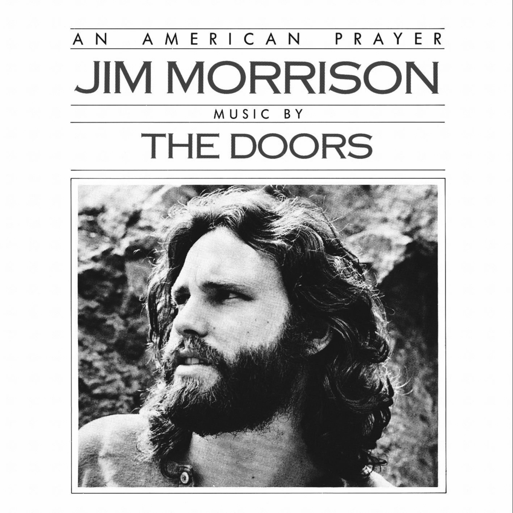
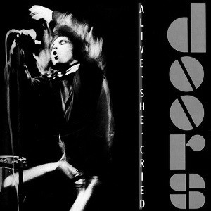
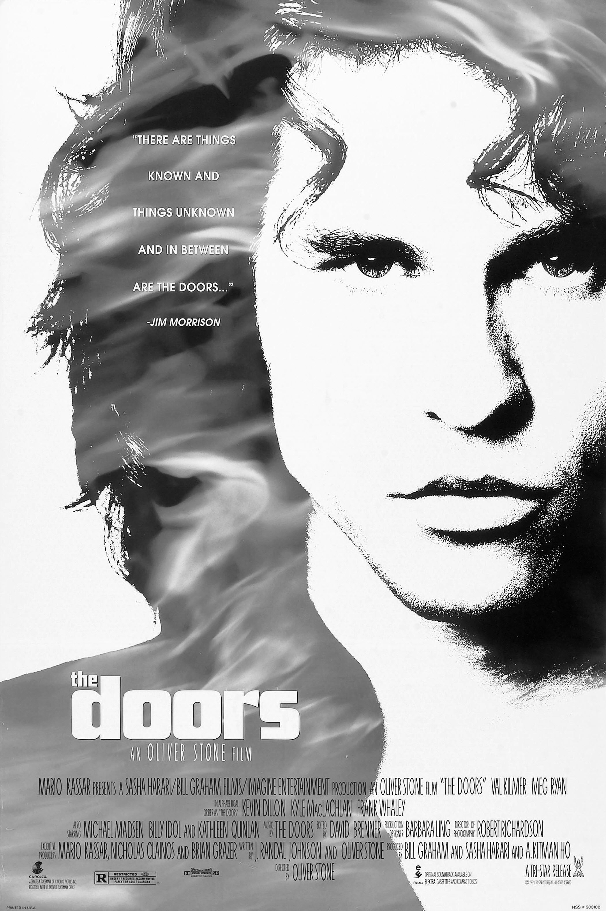

The Doors were an American rock band formed in Los Angeles in 1965, with vocalist Jim Morrison, keyboardist Ray Manzarek, guitarist Robby Krieger, and drummer John Densmore.
They were among the most controversial and influential rock acts of the 1960s, partly due to Morrison's lyrics and voice, along with his erratic stage persona, and the group is also widely regarded as an important part of the era's counterculture.
The band took its name from the title of Aldous Huxley's book The Doors of Perception, itself a reference to a quote by William Blake.
After signing with Elektra Records in 1966, the Doors with Morrison released six albums in five years, some of which are considered among the greatest of all time, including their self-titled debut (1967), Strange Days (1967), and L.A. Woman (1971).
They were one of the most successful bands during that time and by 1972 the Doors had sold over 4 million albums domestically and nearly 8 million singles.
Morrison died in uncertain circumstances in 1971.
The band continued as a trio until disbanding in 1973.
They released three more albums in the 1970s, two of which featured earlier recordings by Morrison, and over the decades reunited on stage in various configurations.
In 2002, Manzarek, Krieger and Ian Astbury of the Cult on vocals started performing as "The Doors of the 21st Century".
Densmore and the Morrison estate successfully sued them over the use of the band's name.
After a short time as Riders on the Storm, they settled on the name Manzarek–Krieger and toured until Manzarek's death in 2013.
The Doors were the first American band to accumulate eight consecutive gold LPs. According to the RIAA, they have sold 34 million albums in the United States and over 100 million records worldwide, making them one of the best-selling bands of all time.
The Doors have been listed as one of the greatest artists of all time by magazines including Rolling Stone, which ranked them 41st on its list of the "100 Greatest Artists of All Time".
In 1993, they were inducted into the Rock and Roll Hall of Fame.
Jim Morrison
Robby Krieger
Ray Manzarek
John Densmore
Jim Morrison
At the center of The Doors’ mystique is the magnetic presence of singer-poet Jim Morrison, the leather-clad “Lizard King” who brought the riveting power of a shaman to the microphone.
Morrison was a film student at UCLA when he met keyboardist Ray Manzarek on Venice Beach in 1965.
Upon hearing Morrison’s poetry, Manzarek immediately suggested they form a band; the singer took the group’s name from Aldous Huxley’s infamous psychedelic memoir, “The Doors of Perception.”
Constantly challenging censorship and conventional wisdom, Morrison’s lyrics delved into primal issues of sex, violence, freedom and the spirit. He outraged authority figures, braved intimidation and arrest, and followed the road of excess (as one of his muses, the poet William Blake, famously put it) toward the palace of wisdom.
Robby Krieger
With a flair for wicked bottleneck slide, exploratory solos and gutbucket grooves, guitarist Robby Krieger brought a stinging, sinuous intensity to the sound of The Doors. But he was also a key songwriter in the band and penned some of their biggest hits – notably their mesmerizing #1 hit, “Light My Fire.”
Before picking up the guitar at age 17, the L.A. native studied trumpet and piano. The inspiration for switching to guitar came not from rock ‘n’ roll, but Spanish flamenco music. His first guitar hero, however, was jazz legend Wes Montgomery.
Ray Manzarek
Ray Manzarek was the architect of The Doors’ intoxicating keyboard sound. Manzarek’s evocative playing fused rock, jazz, blues, bossa nova and an array of other styles into something utterly, dazzlingly new.
The group was born in 1965, when Jim Morrison and Chicago native Manzarek — both UCLA film students — met on Venice Beach. The singer’s poetry was a perfect fit for the classically trained keyboardist’s musical ideas, and eventually they decided to form a band. Though several bassists auditioned for the group, none could match the bass lines provided by Manzarek’s left hand.
John Densmore
Drummer John Densmore was far more than merely the rhythmic engine of The Doors. Strongly influenced by jazz skinsmen like Elvin Jones and the supple grooves of the Brazilian wave, he brought a highly evolved sense of dynamics, structure and musicality to his beats.
Inexorably drawn to music from childhood, Los Angeles-born Densmore honed his sense of dynamics playing with his high school marching band. In the mid-’60s he joined guitarist Robby Krieger in a band called Psychedelic Rangers; shortly thereafter they hooked up with keyboardist Ray Manzarek and Morrison, and an explosive chapter in the development of rock ‘n’ roll began.
Greatest Hits
This section is dedicated to showcasing some of The Doors' finest work. I have selected three of their greatest hits for you to listen to, along with a bit of history behind each song.
Light My Fire
"Light My Fire" originated in early 1966 as a composition by Robby Krieger, who said that he was inspired by the melody of "Hey Joe" and the lyrics of the Rolling Stones' "Play with Fire".
On taking his initial composition to the band, John Densmore suggested that it should have more of a Latin rhythm, Jim Morrison wrote the second verse and part of the chorus ("Try to set the night on fire"), while Ray Manzarek added the Bach-influenced introductory organ motif.
Riders On The Storm
According to guitarist Robby Krieger and keyboardist Ray Manzarek, "Riders on the Storm" was inspired by the country song "(Ghost) Riders in the Sky: A Cowboy Legend", written by Stan Jones and popularized by Vaughn Monroe. The lyrics were written and brought to rehearsal by Morrison, of which a portion of it refers to a hitchhiker killer.
The End
"The End" has been characterized as a precursor of the gothic rock genre. In a review published in The Williams Record in October 1967, critic John Stickney described the Doors collation as "gothic rock", which was one of the first uses of the term in print; most notably, he was more pensive for their contribution to "The End".
Discover More Music
There is a lot more to The Doors than just their greatest hits and I encourage you to explore their music. I have embedded Spotify to the page so you can browse through their other most played tracks.
Legacy
While The Doors may be gone as a band, they have left behind an impressive legacy. Even today you still hear the songs I listed above being played on the radio, a good 50 years after they have been released.
While there are many things that have contributed to their legacy, there are three events that I want to cover in this section.

An American Prayer
Beginning in the late 1970s, there was a sustained revival of interest in the Doors which created a new generation of fans. The origin of the revival is traced to the release of the album An American Prayer in late 1978 which contained a live version of "Roadhouse Blues" that received considerable airplay on album-oriented rock radio stations.
In 1979 the song "The End" was featured in dramatic fashion in the film Apocalypse Now, and the next year the best-selling biography of Morrison, No One Here Gets Out Alive, was published.
The Doors' first album, The Doors, re-entered the Billboard 200 album chart in September 1980 and Elektra Records reported the Doors' albums were selling better than in any year since their original release.
In September 1981, Rolling Stone ran a cover story on Morrison and the band, with the title "Jim Morrison: He's Hot, He's Sexy and He's Dead." In response a new compilation album, Greatest Hits, was released in October 1980. The album peaked at No. 17 in Billboard and remained on the chart for nearly two years.

Alive She Cried
The revival continued in 1983 with the release of Alive, She Cried, an album of previously unreleased live recordings. The track "Gloria" reached No. 18 on the Billboard Top Tracks chart and the video was in heavy rotation on MTV. Another compilation album, The Best of the Doors was released in 1985 and went on to be certified Diamond in 2007 by the Recording Industry Association of America for sales of 10 million certified units.

The Doors Movie
A second revival, attracting another generation of fans, occurred in 1991 following the release of the film The Doors, directed by Oliver Stone and starring Val Kilmer as Morrison. Stone created the script from over a hundred interviews of people who were in Morrison's life. He designed the movie by picking the songs and then adding the appropriate scripts to them.
The original band members did not like the film's portrayal of the events. In the book The Doors, Manzarek states, "That Oliver Stone thing did real damage to the guy I knew: Jim Morrison, the poet." In addition, Manzarek claims that he wanted the movie to be about all four members of the band, not only Morrison. Densmore said, "A third of it's fiction." In the same volume, Krieger agrees with the other two, but also says, "It could have been a lot worse."
The film's soundtrack album reached No. 8 on the Billboard album chart and Greatest Hits and The Best of the Doors re-entered the chart, with the latter reaching a new peak position of No. 32.
Contact
Have any questions or suggestions? Please leave us a message and we'll get back to you.
The Doors Office and Recording Studio
Ever wondered where The Doors had their office and recording studio? They housed a business office on the second floor of 8512 Santa Monica Blvd in West Hollywood, known as "The Doors Workshop". There is a plaque on the front of the building commemorating the former site.